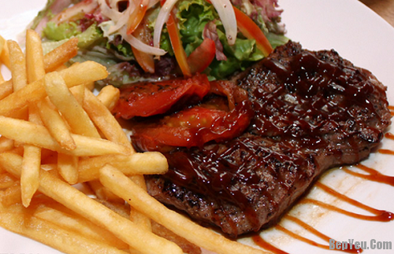
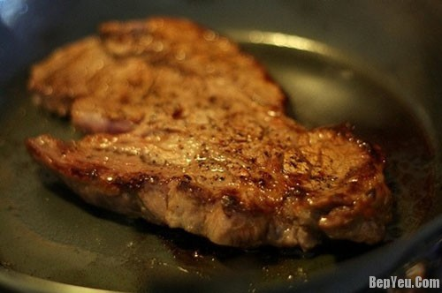
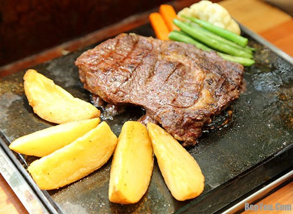

Thịt bò là một loại thực phẩm không còn xa lạ đối với mỗi bà nội trợ vì đây là một loại thực phẩm rất giàu dinh dưỡng và phù hợp với khẩu vị của mọi thành viên và mọi lứa tuổi. Có rất nhiều cách để bạn chế biến thịt bò thành một món ăn ngon, bổ dưỡng mà vẫn giữ nguyên hương vị. Để làm tăng tính đa dạng của thực đơn của gia đình bạn, sau đây chúng tôi sẽ giới thiệu đến các bạn một món ăn hấp dẫn cũng làm từ thịt bò: món bò bít tết.
|

Bò bít tết là món ăn bắt nguồn từ Mỹ, và hiện nay được khá nhiều người Việt Nam ưa chuộng. Món thịt bò bít tết nóng sốt, thịt bò mềm, ngọt và thơm ăn kèm cùng sa-lát và khoai tây chiên, có thể thêm bánh mì là một lựa chọn không tồi cho một ngày cuối tuần sum họp. Chúng tôi sẽ hướng dẫn bạn cách làm bò bít tết ngon kiểu Mỹ vô cùng đơn giản dưới đây. Hãy thử sức với món ăn nổi tiếng của Mỹ cho bữa ăn của gia đình bạn thôi nào. |
Nguyên liệu cần có cho một đĩa bít tết ngon thượng hạng gồm
|
– Bước 1: Thịt bò mua về rửa sạch, thái làm 4 miếng bằng nhau, mỗi miếng khoảng 100g. Sau khi thái miếng thịt bò, bạn dùng dụng cụ để đập dập cho thịt bò mềm và khi tẩm ướp thì gia vị sẽ ngấm và miếng thịt sẽ ngon hơn.
– Bước 2: Ướp thịt bò với một ít nước gừng, một ít nước tỏi, 1/2 muỗng cà phê nước tương, 1 muỗng cà phê đường, 1 muỗng cà phê tiêu, 1/2 muỗng cà phê bột ngọt, trộn đều lên để thịt bò ngấm gia vị. Thịt bò sẽ được ướp trong khoảng thời gian từ 25 – 30 phút là có thể tiến hành nấu được rồi.
– Bước 3: Khoai tây mua về rửa thật sạch, giữ nguyên lớp vỏ để khi chiên lên khoai được giòn và ngon hơn. Khoai tây sau khi rửa sạch thì bổ đôi theo chiều dọc và thái múi cau thành từng miếng vừa ăn. Sau khi thái khoai tây theo kiểu múi cau xong thì chúng ta cho khoai tây vào bát nước lạnh có thêm 1 muỗng canh muối ngâm để khoai tây không bị đen.Chuẩn bị sẵn một chảo dầu nóng, cho ngọn lửa vừa đến khi dầu sôi thì cho khoai tây vào để chiên. Khoai tây chiên đến khi có màu vàng rượm thì vớt ra cho vào giấy thấm dầu, rắc lên trên bề mặt khoai tây một ít muối và một ít tiêu để khoai tây được đậm vị.
– Bước 4: Chuẩn bị sa-lát ăn kèm bò bít tết,Sa-lát ăn kèm cần có một ít sốt dầu giấm. Sốt dầu giấm làm cũng khá đơn giản, các bạn cho vào một bát tô lớn 1/2 muỗng canh dầu giấm, 1 muỗng canh đường, 1/2 muỗng canh muối, 1 muỗng canh nước sôi khuấy đều cho hỗn hợp tan hết. Khi hỗn hợp đã hòa tan hoàn toàn thì cho thêm 1 muỗng dầu ăn, sau đó là 1/3 muỗng canh hạt tiêu, cuối cùng cho hành tím cắt lát vào hỗn hợp và khuấy đều.Xà lách xoong, xà lách và rau ngò mua về rửa sạch, bạn có thể cắt nhỏ hoặc để nguyên rau xanh để làm sa-lát tùy thích và để rau ráo nước.
Thịt bò chiên vừa đủ lửa, không nên chiên quá lâu
– Bước 5: Bắc lên bếp một chiếc chảo, chờ chảo thật nóng thì cho dầu ăn vào (lưu ý là chỉ cho một ít dầu ăn bởi vì khi ướp thịt bò mình cũng đã ướp dầu ăn trong đấy rồi). Khi chảo dầu nóng thì cho thịt bò vào để chiên. Để thịt bò có độ bóng và mềm hơn thì khi lật thịt bò mình sẽ cho vào một ít bơ. Chiên thịt bò trong chảo 5 – 10 phút thì tắt lửa. Tránh nấu thịt bò quá lâu sẽ làm mất vị ngon của thịt và bò bít tết sẽ bị dai.
– Bước 6: Dùng một chiếc đĩa lớn, thịt bò cho vào giữa, khoai tây và sa-lát bạn có thể trang trí tùy theo ý thích miễn sao đẹp mắt. Sau khi sắp xếp xong ở trên đĩa, bạn cho một ít dầu giấm đã chuẩn bị lên phía trên rau xanh. Thịt bò ướp nước tương sẽ lên màu đẹp mắt. Và giờ thì thưởng thức món bò bít tết thôi. 
Một cách bày trí món bò bít tết hấp dẫn
Món bò bít tết đạt chuẩn thì thịt bò ăn sẽ mềm, ngọt, có vị thơm của bơ và màu sắc đẹp mắt. Khoai tây ăn kèm thì giòn tan ngay trong miệng và sa-lát thì ăn thì tươi ngon. Cuối tuần đến rồi đấy, hãy cùng khám phá ẩm thực của đất nước cờ hoa với món bò bít tết thơm ngon thôi nào. Chúc các bạn thành công!
Lưu ý: Nguồn video: https://www.youtube.com/watch?v=AVPKSVnyQQk
Chúc các bạn thành công và có một bữa ăn ngon miệng nhé!!
E-mail: nguyenkhai4620@gmail.com